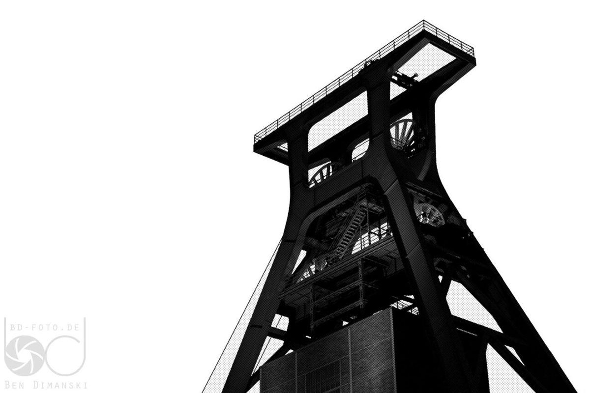

Descubriendo el Ruhrgebiet: Zollverein, una joya industrial

El Ruhrgebiet, o región del Ruhr, es una de las áreas más fascinantes de Alemania. Entre sus numerosos atractivos, el complejo industrial de Zollverein destaca como un símbolo de la transformación de una región minera en un centro cultural y turístico de renombre mundial. Este lugar, declarado Patrimonio de la Humanidad por la UNESCO, combina historia, arquitectura y naturaleza de una manera única. Si estás planeando visitar esta zona, aquí te contamos todo lo que necesitas saber para disfrutar al máximo de tu experiencia en Zollverein.
¿Cómo llegar a Zollverein?
Zollverein se encuentra en la ciudad de Essen, en el corazón del Ruhrgebiet. La región está bien conectada por transporte público, por lo que llegar es relativamente sencillo. Si vienes desde ciudades cercanas como Düsseldorf o Colonia, el tren es una excelente opción. Desde la estación central de Essen, puedes tomar un autobús o el tranvía que te llevará directamente al complejo. Si prefieres viajar en coche, hay amplios aparcamientos disponibles. La accesibilidad es uno de los puntos fuertes de Zollverein, lo que lo convierte en un destino ideal para todos.
La mejor época para visitar
Zollverein es un destino que ofrece diferentes atractivos según la época del año. En primavera y verano, los jardines y áreas verdes del complejo cobran vida, lo que lo convierte en un lugar perfecto para pasear y disfrutar de la naturaleza. Durante el otoño, los árboles cambian de color, creando un escenario pintoresco para tus fotos. En invierno, el lugar se transforma con mercados de Navidad y eventos especiales, dándole un ambiente mágico. Cada temporada tiene su encanto, así que elige la que más se adapte a tus intereses.
Los principales atractivos de Zollverein
1. **La Rueda de la Mina**: Este monumental símbolo de la industria minera es una de las imágenes más icónicas de Zollverein. Subir a la plataforma de observación te permitirá disfrutar de vistas panorámicas del complejo y sus alrededores.
2. **El Museo del Ruhr**: Ubicado en la antigua planta de lavado de carbón, este museo ofrece una visión profunda de la historia industrial de la región. Las exposiciones interactivas y los detalles arquitectónicos del edificio son impresionantes.
3. **El Parque de Zollverein**: Un espacio verde que contrasta con la arquitectura industrial. Perfecto para un paseo relajante, un picnic o simplemente disfrutar del aire libre.
4. **Las Instalaciones de Diseño**: Zollverein también es sede de eventos culturales y exposiciones de diseño. Si te interesa el arte contemporáneo, no te pierdas la oportunidad de explorar estos espacios.
5. **Las Visitas Guiadas**: Para conocer en profundidad la historia y los detalles del complejo, las visitas guiadas son una excelente opción. Hay tours temáticos que se adaptan a diversos intereses, desde la arquitectura hasta la minería.
¿Qué comer cerca de Zollverein?
La gastronomía del Ruhrgebiet es tan diversa como su cultura. Cerca de Zollverein, encontrarás opciones para todos los gustos. Prueba platos típicos como el Currywurst, una salchicha con salsa de curry que es muy popular en la región. También puedes disfrutar de la cocina internacional en los restaurantes de Essen, donde la oferta va desde comida turca hasta italiana. No olvides acompañar tu comida con una cerveza local para completar la experiencia.
Consejos finales para tu visita
Zollverein es un lugar que combina historia, cultura y naturaleza, por lo que es recomendable dedicar al menos medio día para explorarlo con calma. Lleva calzado cómodo, ya que hay mucho terreno por recorrer, y no te olvides de tu cámara para capturar los momentos más especiales. Si viajas en familia, también hay actividades diseñadas especialmente para los más pequeños. En definitiva, Zollverein es un destino que no puedes perderte si visitas el Ruhrgebiet.
Haiktec
- 7 Estrategias Clave para Atraer Más Clientes a Tu Pequeño Restaurante o Cafetería
- Planificador de Presupuesto y Ruta para el Bosque Negro: Tracker Profesional para Viajeros Masculinos
- Guía Práctica para Descubrir el Saarland y la Mosela: Ritmos y Sabores Alemanes
Text mit KI erstellt und automatisch geprueft.